PCA
Overview
Principal component analysis, or PCA, is a way to turn data with many columns into a few new columns that keep most of the information. It looks for the directions in which the data varies the most. The first principal component is the one direction that captures the most variation. The second captures the most of what is left, and so on. Each component is a mix of the original columns.
These directions come from the eigenvectors of the data’s covariance matrix, which is a table of how each pair of columns moves together. Each eigenvector gives one direction. Its eigenvalue tells how much of the variation lies along that direction. Sorting the eigenvalues from largest to smallest ranks the components from most to least important. Keeping only the first few and dropping the rest is called dimensionality reduction.
This matters because data with many columns is hard to work with. It cannot be drawn on a chart. With many columns, points tend to look about equally far apart, so distances say less about which points are truly alike. Many columns may also repeat the same signal or carry only noise, and models need much more data to learn from them. Reducing the data to a few components makes patterns easier to see and separates the main signal from the noise.
This project uses PCA in two places. The first is the job posting word weights from the Clustering page, which have more than 7,000 columns. Here PCA shows whether the postings form clear groups when squeezed down to two dimensions. For this text data a version called truncated SVD is used, because it works directly on tables that are mostly zeros. The second is Indeed’s job postings index for 47 sectors. Here PCA separates the movement that all sectors share, such as the drop in 2020 and the peak in 2022, from movement that belongs to only a few sectors. That makes it possible to ask whether software development still looks unusual once the shared movement is taken out.
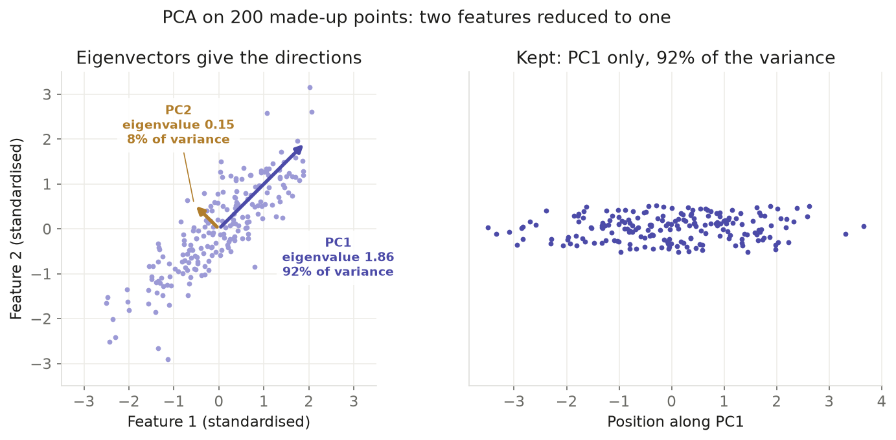
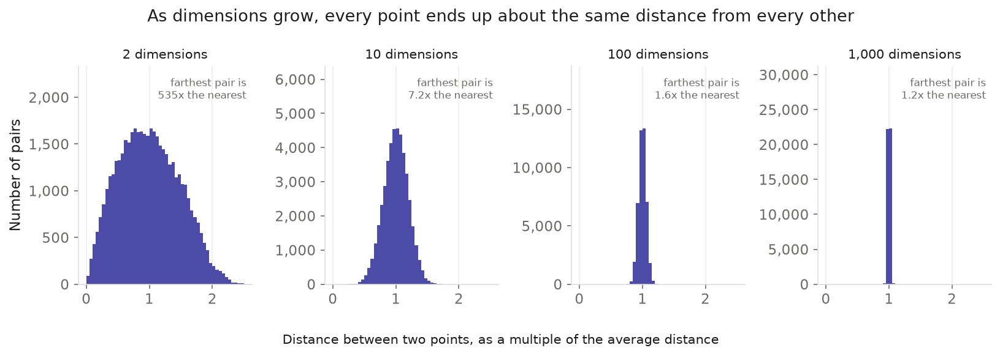
Data Preparation
PCA needs a table of numbers with no labels and no missing values. The columns also need to be on a similar scale. PCA looks for the directions with the most variation, so a column with large values would take over just because of its size. To avoid this, each column is usually standardised so that it has a mean of zero and a standard deviation of one.
For the sector analysis, the data is Indeed’s daily job postings index for 47 US sectors, where 100 stands for the level on 1 February 2020. Only total postings were used. The daily values were averaged into months, which gives a table of 47 sectors by 79 months, from February 2020 to August 2026. Each sector’s series was then standardised. Some sectors swing much more than others, and without this step those sectors would dominate the result. After standardising, a value of 2 means that month was two standard deviations above that sector’s own average.
For the text analysis, the input is the same TF-IDF table used for clustering, in both of its versions. It is already numeric, and each posting is already scaled to the same size, so no extra scaling was needed. Labels such as role family and company were kept out of the fit and only used afterwards to colour the plots.
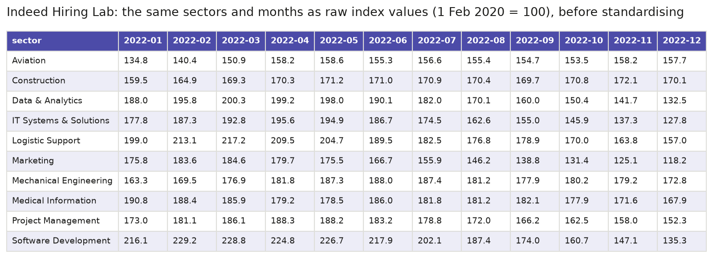
Before: the same ten sectors and twelve months as raw Indeed index values, where 100 is each sector’s level on 1 February 2020. Each sector’s series is then standardised to mean 0 and standard deviation 1 over all its months, shown in the next table.
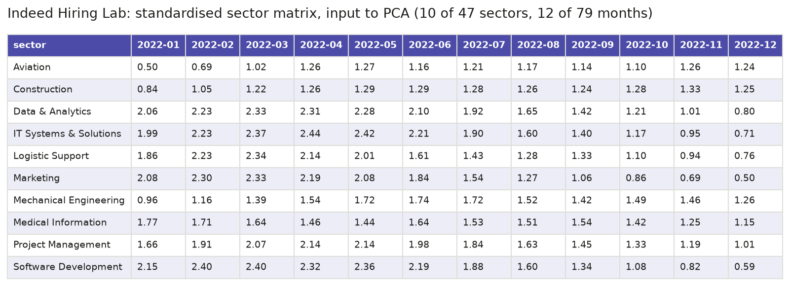
After: ten of the 47 sectors over the twelve months of 2022, after each sector was standardised. The three AI-exposed sectors, Data & Analytics, IT Systems & Solutions and Software Development, are shown with seven control sectors picked at random. A value above zero means that month was above the sector’s own average, and every value shown here is above zero.
Data files
- Raw data: Indeed Hiring Lab’s job postings index, the file
US/job_postings_by_sector_US.csvin the job_postings_tracker repository on GitHub. The full raw files are not stored in this repository, so a 20-row raw sample is linked instead. - Clean data: indeed_sector.csv, the cleaned daily index for all 47 sectors that the PCA table is built from.
- Text data for the SVD figures: ats_final.csv, the same cleaned job postings used on the Clustering page.
- Before-transformation sample: pca_before_sample.csv, the same sectors and months as raw index values, shown in the first table above.
- PCA input sample: pca_input_sample.csv, shown in the second table above.
Code
| File | What it does | Language | Main packages |
|---|---|---|---|
| sector_pca.py | Builds the standardised sector-by-month matrix from the Indeed data, fits PCA, and removes the first component from each sector. | Python 3.12 | scikit-learn, pandas, numpy |
| text_clusters.py | Builds the TF-IDF matrix, removes text that a company repeats in every posting, runs k-means and hierarchical clustering, and runs truncated SVD. | Python 3.12 | scikit-learn, scipy, pandas, numpy |
| Truncated SVD in text_clusters.py | Runs truncated SVD on the TF-IDF table and lists the words with the largest loadings on each component (fit_svd, top_loadings). |
Python 3.12 | scikit-learn |
| cluster_plots.py | Draws the clustering and SVD charts: the choice of k, silhouette diagrams, heatmaps, dendrograms, explained variance and projections. | Python 3.12 | matplotlib, seaborn, scipy, scikit-learn |
| 02_clustering_pca.ipynb | Runs the clustering and PCA steps from start to end and saves every figure, the cluster labels and a results report. | Python 3.12 (Jupyter) | pandas, scikit-learn, scipy, matplotlib |
| make_pca_concept_figures.py | Draws the two explanatory figures in the Overview from small made-up data. | Python 3.12 | matplotlib, scipy, scikit-learn |
| make_module2_samples.py | Saves the small samples of the clustering and PCA input shown on these pages, and draws them as table images. | Python 3.12 | pandas, numpy, matplotlib |
Results
PCA was used in two places, and the numbered figures further down the page show both.
How much each reduction keeps
On the job posting text, truncated SVD reduced about 7,500 to 7,800 word columns to 100 components. Those 100 keep 57% of the variance for the raw descriptions and 37% once company boilerplate is removed, and the first 10 keep only 30% and 11% (figures 1 and 4). Text spreads its variation over many small directions, so no handful of components sums it up.
The Indeed sector table reduces far better. The first component alone explains 82.1% of the variance and the second 12.3%, so two components hold 94% of the movement in all 47 sectors (figure 7).
How to read the relationship between variables and components
Each principal component is a weighted mix of the original variables, and those weights are called loadings. A large positive loading means the variable rises when the component’s score rises. A large negative loading means the variable moves the opposite way. A loading near zero means the variable has little to do with that component. Looking at the variables with the biggest loadings at each end of a component shows what that component stands for.
Indeed sectors. Here each loading is the correlation between a sector’s own series and the component, so it runs from −1 to 1. All 47 sectors load positively on PC1, from 0.47 for Physicians & Surgeons to 0.99 for Management, so PC1 is the movement that every sector shares. PC2 sets two groups against each other. The sectors at each end are:
| End of PC2 | Sector | PC1 loading | PC2 loading |
|---|---|---|---|
| Top | Physicians & Surgeons | 0.473 | 0.829 |
| Top | Therapy | 0.526 | 0.804 |
| Top | Civil Engineering | 0.654 | 0.734 |
| Top | Dental | 0.772 | 0.521 |
| Bottom | IT Infrastructure, Operations & Support | 0.889 | −0.425 |
| Bottom | IT Systems & Solutions | 0.880 | −0.430 |
| Bottom | Marketing | 0.880 | −0.435 |
| Bottom | Data & Analytics | 0.854 | −0.489 |
| Bottom | Software Development | 0.816 | −0.538 |
A sector near the top of PC2 moved more like healthcare than the average sector did. A sector near the bottom moved like office and tech work. Figure 9 places every sector by these two loadings.
Job posting text. Here each loading is the weight of one word in a component. The table lists the ten words with the largest weights at each end of the first three components, for the version with company boilerplate removed.
| Component | Positive end | Negative end |
|---|---|---|
| 1 | data, technical, ai, product, customer, sales, customers, engineering, systems, work | none (every weight is positive) |
| 2 | sales, account, customer, business, accounts, enterprise, revenue, strategic, value, executive | systems, infrastructure, security, research, production, engineering, design, model, reliability, engineers |
| 3 | data, customer, customers, technical, spark, solutions, architecture, big, science, platform | legal, marketing, partner, security, operations, accounting, programs, finance, commercial, market |
Component 1 has only positive weights, because truncated SVD does not centre the data, so it describes the average posting. Component 2 runs from sales words at one end to engineering words at the other. A posting’s score on it shows how much it reads like a sales job rather than an engineering job, which is why sales postings sit at the top of figure 5 and software engineering and research postings at the bottom. Component 3 sets customer-facing data and solutions words against legal, marketing and finance words. On the raw descriptions the same reading turns up company names instead: component 2 runs from Databricks words such as “databricks”, “platform” and “lakebase” to OpenAI and Anthropic words, which is why the raw postings form one arm per company in figure 2.
What the sector components show over time
PC1 of the sector table is the hiring cycle that every sector shares. It falls to its lowest point in May 2020, peaks in March 2022, and then falls every month from June 2022 to June 2023 (figure 7). Removing PC1 from each sector leaves only the movement that is special to that sector (figure 8). For the AI-exposed group, the average of what is left drops from 0.464 standard deviations in 2022 to −0.625 in 2023, then recovers only partly, to −0.174 by 2026. The control group stays within 0.08 of zero in every year.

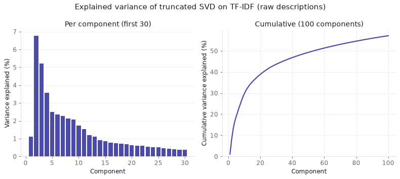
1. Explained variance of truncated SVD (raw descriptions)
Variance is spread thinly: 10 components explain 30% and 100 explain 57%. Component 1 explains only 1.1% because truncated SVD does not centre the data.

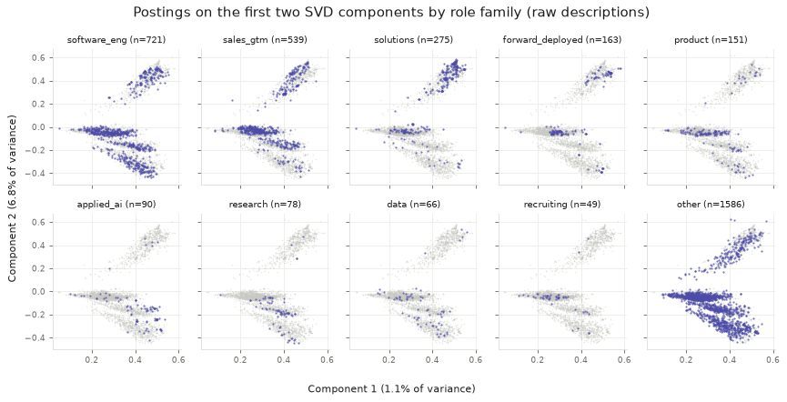
2. Postings on the first two SVD components, by role family (raw descriptions)
Postings form three arms, one per large company (Databricks, OpenAI, Anthropic), and every role family appears on all three, so position shows the employer, not the job.

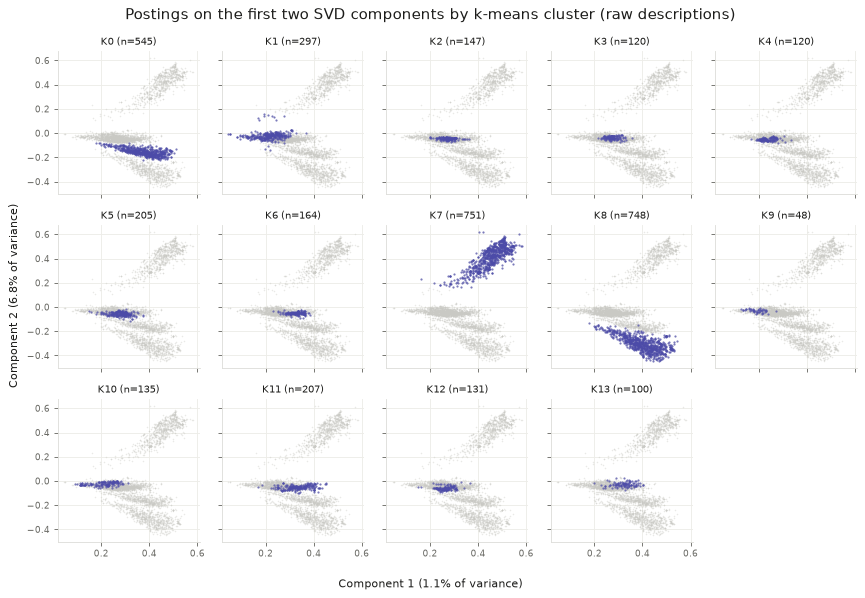
3. Postings on the first two SVD components, by k-means cluster (raw descriptions)
The three large company clusters, Databricks (K7), OpenAI (K8) and Anthropic (K0), each fill one arm, while the eleven smaller clusters overlap near zero.

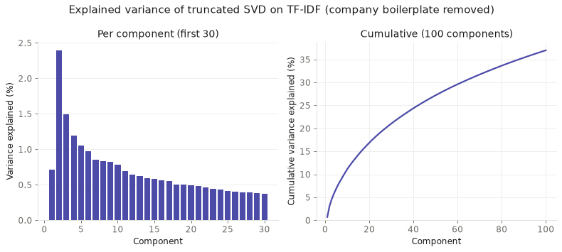
4. Explained variance of truncated SVD (company boilerplate removed)
Without boilerplate, variance is even more spread out: 10 components explain 11% and 100 explain 37%.

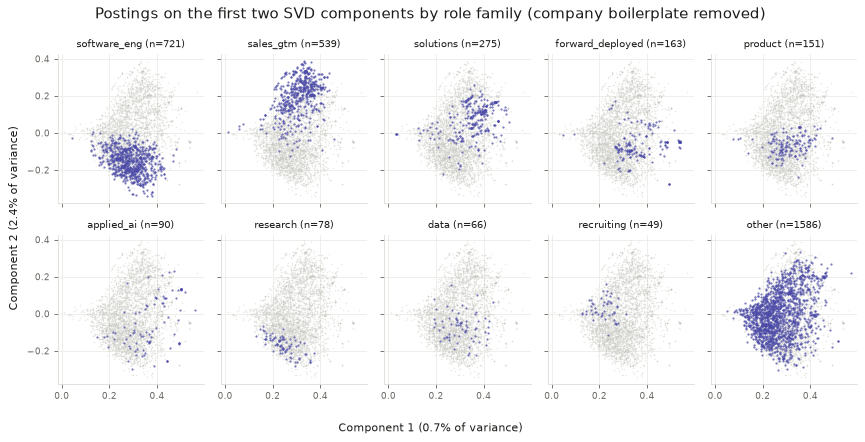
5. Postings on the first two SVD components, by role family (company boilerplate removed)
Role families now separate: sales sits at the top, software engineering and research at the bottom, and solutions to the upper right, with forward_deployed in between.

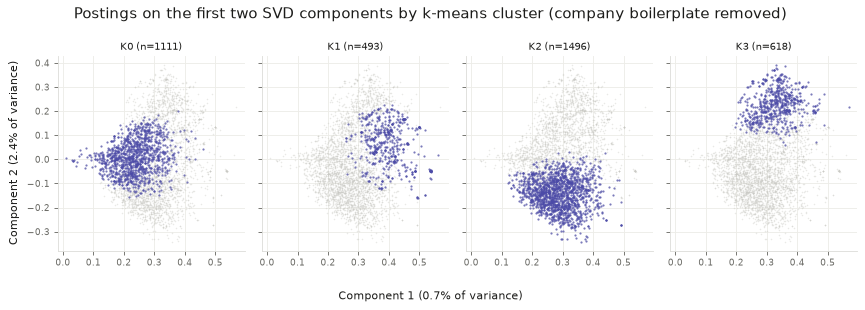
6. Postings on the first two SVD components, by k-means cluster (company boilerplate removed)
The sales (K3) and engineering (K2) clusters are clearly apart, while the customer-technical (K1) and legal/finance (K0) clusters overlap with the others.

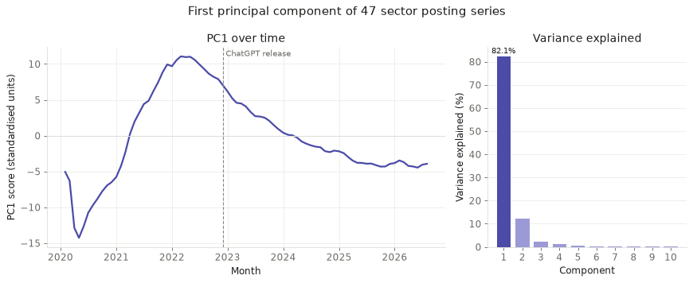
7. First principal component of the Indeed sector panel
One shared pattern explains 82% of the movement in all 47 sectors. It peaks in March 2022 (11.06) and falls every month from June, reaching 7.88 in November. ChatGPT only came out on 30 November, so nearly all of this fall came before it, and much of the drop in postings hit the whole job market.

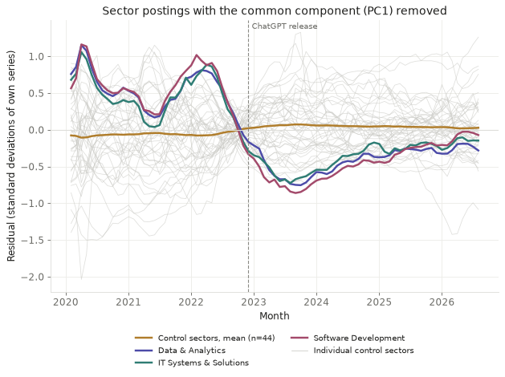
8. Sector postings with the first component removed
Even with the shared pattern removed, the AI-exposed group's mean residual drops from 0.464 in 2022 to −0.625 in 2023 and only partly recovers (−0.461, −0.274, −0.174 through 2026), while the control group stays near zero. Only three sectors fell further than Software Development, and two of them are control sectors (IT Infrastructure, Operations & Support and Media & Communications), so it is unusual but not unique.

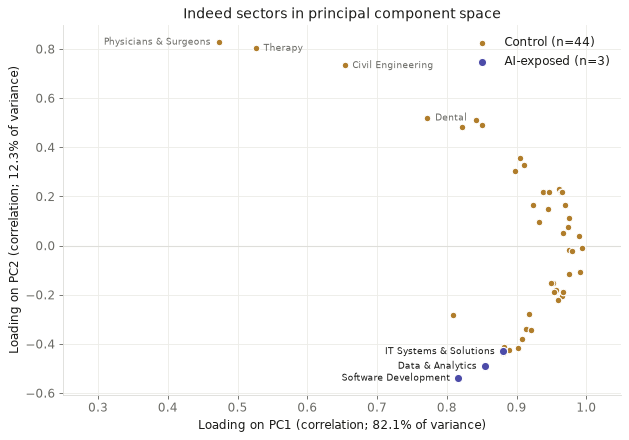
9. Indeed sectors on the first two principal components
All sectors load positively on PC1. On PC2, the top is mostly healthcare (Physicians & Surgeons, Therapy and Dental, with Civil Engineering third), while Software Development and Data & Analytics are the two lowest of all 47 and IT Systems & Solutions is close behind, next to Marketing, Media and IT Infrastructure.
Conclusions
The fall in tech job postings after 2022 was mostly part of a wider swing that hit every sector. One component explains 82% of the movement in all 47 sectors. It peaked in March 2022 and was falling every month from June, months before ChatGPT came out at the end of November. On timing alone, the slowdown fits wider forces, such as the interest rate rises that began in March 2022, better than it fits the arrival of AI tools.
The AI-exposed sectors did fall further than that shared swing explains. With the first component removed, their average dropped to −0.625 standard deviations in 2023 and was still below zero in 2026, while the control sectors stayed close to zero. That extra fall was not unique to them, though. Only three sectors fell further than Software Development once the shared swing was removed, and two of them were control sectors: IT Infrastructure, Operations & Support and Media & Communications. The third, Data & Analytics, is itself AI-exposed. The second component groups these sectors together with Marketing. So the extra decline was shared by a wider band of office and tech work, not only by the three sectors most exposed to AI. PCA can show this pattern, but not what caused it.
The job posting text tells a different story about dimensions. Even 100 components keep only 37% to 57% of the variance, so postings do not boil down to a few themes. Component 1 only describes the average posting, so the components that tell postings apart start at component 2. On the raw text they separate companies. Once the company boilerplate is removed, component 2 separates sales work from engineering work. That matches the Clustering page: the clearest line through these jobs runs between selling and building.